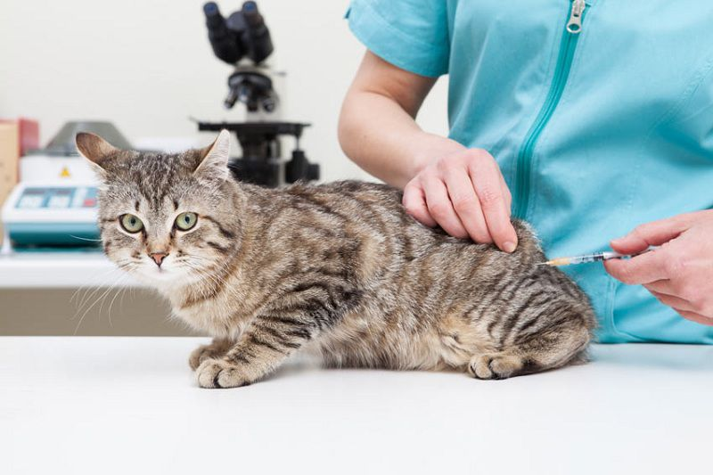

- Tiêm phòng là một trong những cách nuôi mèo khoa học và tiết kiệm nhất. Trước khi mang chú mèo về nhà bạn cần biết về tình hình sức khỏe của chúng. Thông thường chúng đã được tiêm đầy đủ các mũi. Tuy nhiên, trong trường hợp mèo con chưa được tiêm phòng, bạn cũng cần đưa chúng tới gặp bác sĩ thú y để tiêm vacxin phòng bệnh care, parvo, dại… Việc này vừa giúp chúng có sức đề kháng tốt vừa ngăn chặn tỷ lệ mắc bệnh của mèo con.
- Lưu ý là nên tiến hành tiêm phòng cho mèo cưng càng sớm càng tốt. Thời gian tốt nhất là khi chú mèo đã quen và thích nghi với ngôi nhà mới là có thể tiến hành tiêm phòng. Không nên vừa đưa mèo con về nhà đã tiêm phòng ngay sẽ không có hiệu quả.
Tiêm phòng cho mèo

Giới thiệu mèo con với mọi người trong gia đình
- Hãy cho mèo con làm quen với các thành viên trong gia đình và các vật nuôi khác. Bạn cần đảm bảo sẽ không có bất cứ xung đột nào có thể xảy ra. Nếu mèo cưng cảm thấy không thoải mái cũng đừng nên vội vàng. Có thể tiến hành làm quen từ từ tránh để mèo con cảm thấy hoảng sợ.
- Cách nuôi mèo con hiệu quả nhất lúc này là dành thời gian cho chúng. Mèo con có thể không quen với việc được bế hay vuốt ve. Hãy luôn giữ bình tĩnh để chú mèo không cảm thấy sợ hãi khi ở xung quanh bạn hay thành viên trong gia đình. Quan trọng nhất vẫn là cần có thời gian để thích nghi.
- Chúng có thể trốn đi trong vài ngày đầu tiên nhưng chỉ vì chúng sợ thôi. Bạn cũng không nên quá lo ngại về chuyện này. Đây là tâm lý chung của tất cả các vật nuôi. Khi mèo đã quen với môi trường mới bạn có thể huấn luyện chúng những bài học cơ bản. Bạn cũng có thể xây dựng một chế độ chăm sóc phù hợp.
Mới nuôi mèo cần chuẩn bị những đồ dùng nào?
Cách nuôi mèo con hiệu quả nhất, trước tiên hãy chuẩn bị cho chúng những đồ dùng và phụ kiện cần thiết. Đảm bảo mang tới cho chúng một cuộc sống đầy đủ nhất:
- Cát vệ sinh cho mèo: Nên sử dụng những loại cát thấm hút nhanh, có hương thơm dịu nhẹ tự nhiên.
- Khay, nhà vệ sinh cho mèo: Nên dùng loại có nắp để tránh được mùi khó chịu mỗi lần mèo giải quyết nhu cầu.
- Bát ăn uống cho mèo: Có thể mua bát đôi để vừa đựng được thức ăn, vừa đựng được nước uống. Sau mỗi bữa ăn cần vệ sinh bát cho sạch sẽ và khô ráo. Khu vực ăn uống của mèo nên cách khu vực vệ sinh ít nhất 1,5m.
- Trụ cào móng cho mèo hoặc nhà cây cho mèo , cat tree: Sử dụng hai món đồ này sẽ giúp cho mèo cào cấu làm hư nội thất trong gia đình bạn.
- Lược chải lông cho mèo: Nên chải lông hàng tuần cho mèo lông ngắn và hàng ngày đối với mèo lông dài. Ngoài ra đối với mèo lông dài, việc chải lông hàng ngày sẽ tránh được việc lông vón cục gây khó chịu.
- Sữa tắm cho mèo : Sử dụng sữa tắm chuyên dụng để mang lại hiệu quả cao nhất. Tránh gây tổn thương da và làm lông xơ rối từ những loại sữa tắm của con người hoặc động vật khác.
Huấn luyện mèo đi vệ sinh đúng chỗ
- Nếu chú mèo đi bậy lần đầu, không nên đánh mắng. Bạn có thể lấy một cái khăn nhỏ thấm nước tiểu hoặc túm phân của mèo lại. Sau đó, đặt vào vị trí muốn nó đi vệ sinh. Nếu lần thứ hai đi bậy, bằng mọi giá phải bắt quả tang ngay lúc đó.
- Dùng tay giữ chặt phần da ở cổ, xách lên dí đầu vào đống nước tiểu (hoặc phân) mắng nó. Tiếp đến, xách nó sang vị trí muốn nó đi vệ sinh. Dí đầu mèo con lần hai và dặn đi vệ sinh ngay chỗ này. Làm 2 – 3 lần nó sẽ quen. Nên áp dụng cách nuôi mèo con và bài huấn luyện này nên thực hiện càng sớm càng tốt.
- Đối với mèo dưới 2 năm tuổi có tính quậy phá, tét thật mạnh vào mông hoặc đầu (tránh tuyệt đối phần bụng). Mèo trên 2 năm tuổi, bế lại nói nhỏ nhẹ. Mèo trên hai năm sẽ khó dạy hơn mèo nhỏ. Nói nhỏ nhẹ như những người trưởng thành với nhau. Nó sẽ nghe.
- Lưu ý, bạn phải thay cát mỗi ngày cho sạch sẽ và rửa khay vệ sinh thường xuyên. Ít nhất một lần trong một tuần. Bạn nên đặt hộp đựng cát tại nơi cố định, kín đáo, ít người qua lại. Thuận tiện cho mèo của bạn dễ đến. Trên thị trường cũng có rất nhiều loại cát cho mèo , nhưng hầu hết chúng thường thích loại hạt nhỏ vón cục.
2
Các giai đoạn phát triển của mèo và lưu ý
Cách nuôi mèo con mới đẻ bị mất mẹ chưa mở mắt
Cách nuôi mèo con lúc này là tìm mèo mẹ để cho bú ké. Có thể cho chúng làm quen bằng cách lấy nước tiểu của mèo mẹ thấm vào khăn và phủ đều lên cơ thể mèo con mới mang về. Nếu không thể tìm được mèo mẹ để xin sữa. Bạn cần lưu ý những việc như sau:
- Giữ ấm cho mèo con 24/24. Có thể sử dụng đèn sưởi. Hoặc ủ ấm bằng khăn lông, áo thun mỏng xếp thành nhiều lớp để giữ nhiệt tốt hơn.
- Nếu không có sữa mẹ thì cách nuôi mèo con tốt nhất là dùng sữa bột cho mèo. Mèo con không quen việc bú bình sữa có thể thay thế bằng xilanh y tế. Lưu ý, bạn nhớ đun ấm sữa tầm 40°C, khử trùng bình sữa hoặc xi lanh sạch sẽ.
- Mua thêm ít viên canxi cho mèo để hòa vào sữa. Mỗi ngày sử dụng 1/6 viên.
- Mỗi ngày cho mèo con bú 3 – 4 lần cách đều là được.
- Nếu mèo bị tiêu chảy khi uống sữa, lập tức mang đến bác sĩ thú y.
- Những chú mèo con chưa thể nào tự đi vệ sinh cơ thể được, bạn có thể dùng khăm mềm chạm nhẹ vào chỗ kín để giúp mèo con đi vệ sinh.
Cách chăm sóc mèo con từ 1 – 2 tháng tuổi
- Mèo con 1 – 2 tháng tuổi đã có răng, đứng thẳng người, đi lại và chạy nhảy khá nhanh nhẹn. Màu mắt xanh lục hoặc vàng đục đối với mắt xanh lá hoăc vàng/cam. Màu xanh dương nhạt đối với mèo mắt xanh dương. Cách nuôi mèo con giai đoạn này về cơ bản vẫn giữ chế độ dinh dưỡng như đối với mèo sơ sinh. Mỗi ngày chỉ bú sữa 2 lần vào buổi sáng và tối. Canxi vẫn được hòa cùng với sữa (1/8 – 1/6 viên).
- Hai bữa buổi trưa và chiều tập cho mèo ăn cơm trộn nhuyễn với cá, thịt gà, thịt lợn… Thịt gà rất có lợi cho sự phát triển của mèo trong độ tuổi này. Có thể bổ sung thêm lượng thịt gà trong khẩu phần ăn và ăn dặm thêm vitamin. Tuyệt đối chưa cho mèo ăn xương trong thời kì này.
- Ăn uống ngủ nghỉ có khoa học, hình thành thói quen cho mèo. Có thể tập cho mèo ngủ từ 11h và thức dậy vào 6h sáng. Độ tuổi này, tuy đã lớn hơn nhưng hệ tiêu hóa chưa thể khẳng định là khỏe mạnh. Nếu có biểu hiện bị tiêu chảy thì ngừng uống sữa.
- Chỉ ăn cháo trộn nước thịt, cá xay nhỏ, uống kèm theo nước biển khô pha đường. Sau đó, đưa mèo con tới gặp bác sĩ thú y nơi gần nhất để kiểm tra. Chủ nhân quan sát tình trạng phân mèo. Nếu phân ở dạng rắn, thể trạng khỏe mạnh có thể mua thuốc tấy giun cho mèo . Có thể tập tắm cho mèo bằng nước ấm mỗi tháng một lần. Sử dụng sữa tắm cho mèo chuyên dụng hoặc sữa tắm trị ve rận để tắm cho mèo con.
Cách chăm sóc mèo con từ 3 – 6 tháng tuổi
- Lúc này, mèo đang trong độ tuổi phát triển. Tròng mắt bắt đầu trong hơn, không còn đục nữa. Màu mắt thay đổi lần cuối cùng. Răng nanh nhỏ và có độ trong. Ở lứa tuổi này, cách nuôi mèo con có nhiều thay đổi. Có thể duy trì cho mèo con uống sữa hoặc cũng có thể cắt hẳn. Giống như giai đoạn dậy thì của người, mèo con bắt đầu phổng phao, có da có thịt hơn.
- Ngoài ăn cơm với các loại thịt, bổ thêm dinh dưỡng từ rau củ quả. Đồng thời, duy trì cho uống canxi đều đặn. Tập cho mèo ăn hạt khô từ tuần thứ 10. Chỉ nên mua các sản phẩm thức ăn cho mèo chính hãng tại Pet Mart để không gây sỏi thận và tránh béo phì, mập ú.
- Nếu mèo con chưa quen ăn hạt có thể pha thêm chút sữa hoặc nước vào hạt để chúng dễ ăn hơn. Luôn để sẵn nước bên cạnh để mèo con có thể uống bất cứ lúc nào. Nhớ vệ sinh bát ăn cho mèo sạch sẽ. Duy trì thói quen phơi nắng mỗi ngày và tẩy giun định kì cho mèo mỗi tháng một lần. Sau 1 tuần tẩy giun, tiến hành tiêm vacxin phòng bệnh cho mèo theo chỉ dẫn của bác sĩ thú y
Cách chăm sóc mèo trên 6 tháng tuổi
- Lúc này, mèo đã trưởng thành. Mắt mèo rất trong, đồng tử màu đen. Tròng mắt rõ ràng màu sắc. Răng còn rất trắng. Răng nanh to. Bạn có thể áp dụng nhiều cách nuôi mèo khác nhau, đa dạng chế độ ăn uống. Vì bản thân chúng có sức đề kháng khá tốt. Sau 1 tuổi cần đưa mèo đi tái khám. Tiêm định kỳ mỗi năm lại một lần hai mũi.
- Mèo từ hai tuổi trở đi về nhận dạng cũng như mèo 6 tháng tuổi. Có điều khác biệt là chân răng bắt đầu vàng. Mèo càng lớn tuổi răng càng vàng. Một số mèo nuôi được cho đi cạo vôi răng thì răng sẽ ít vàng hơn hoặc vẫn còn trắng. Cách nuôi mèo cao tuổi khác với cách nuôi mèo con rất nhiều. Bạn nên chú ý tới đặc điểm và sở thích của chúng. Những chú mèo tuổi cao có vẻ như không được thân thiện cho lắm. Tốt nhất không nên đổi chủ sau 2 tuổi.
3
Các lưu ý về cách chăm sóc mèo
- Sử dụng nước muối sinh lý có bán ở các hiệu thuốc tây để nhỏ mắt và tra mũi cho mèo. Bảo vệ chúng khỏi bệnh viêm mắt hoặc viêm mũi. Ngoáy tai mỗi tháng một lần bằng tăm bông cho trẻ em. Mèo xù có lỗ tai bé hơn mèo ta nên cần lưu ý vệ sinh tai cho bé thường xuyên hơn.
- Tắm cho mèo 1 tháng một lần với nước ấm. Nếu trời lạnh quá có thể không tắm. Lưu ý sấy khô thật kĩ đối với lông mèo. Thường xuyên phơi nắng đều đặn vào các buổi sáng là tốt nhất. Tránh tiếp xúc với ánh nắng gay gắt sau 10h.
- Cách nuôi mèo con tốt nhất là cố định chúng trong một không gian. Không cho đi ra khỏi nhà, lên nóc nhà, sân thượng. Việc nuôi cố định này đối với mèo từ 6 tháng tuổi trở xuống sẽ hạn chế việc mèo đi chơi, đi lang thang. Chú ý làm sổ y tế theo dõi sức khỏe của mèo. Tiêm phòng, tẩy giun định kì đầy đủ theo sự hướng dẫn của bác sĩ thú y.